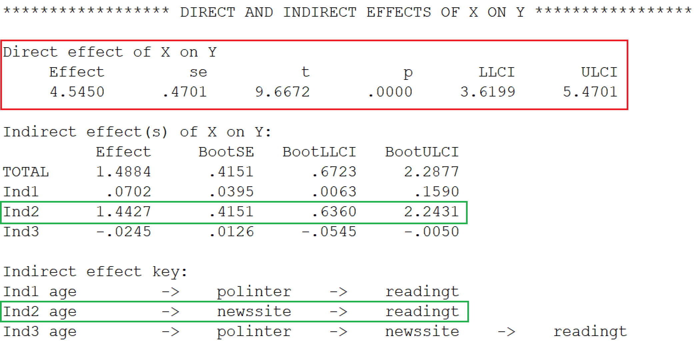
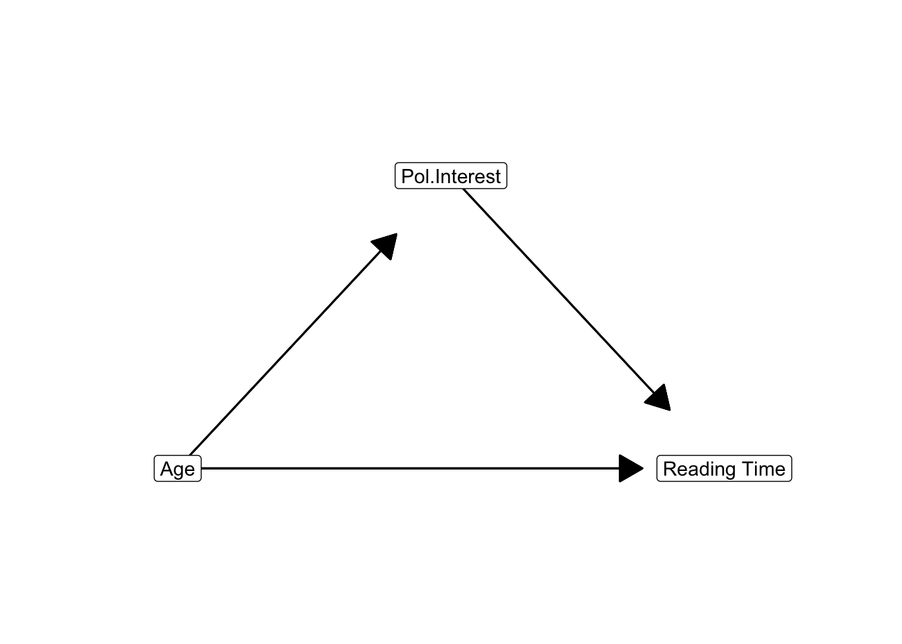
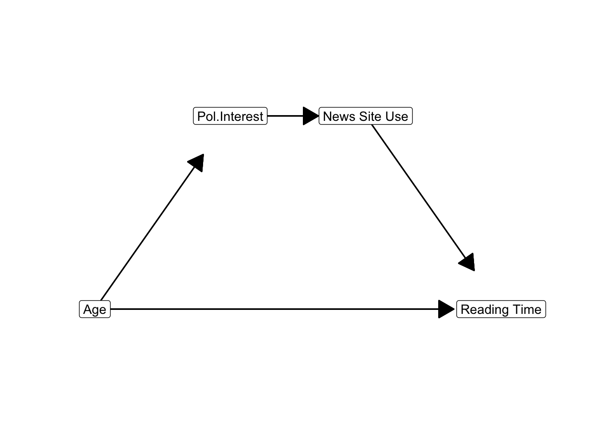
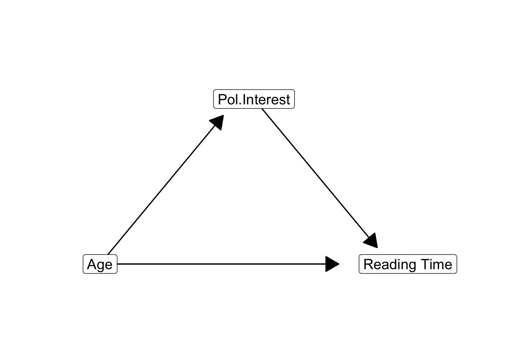
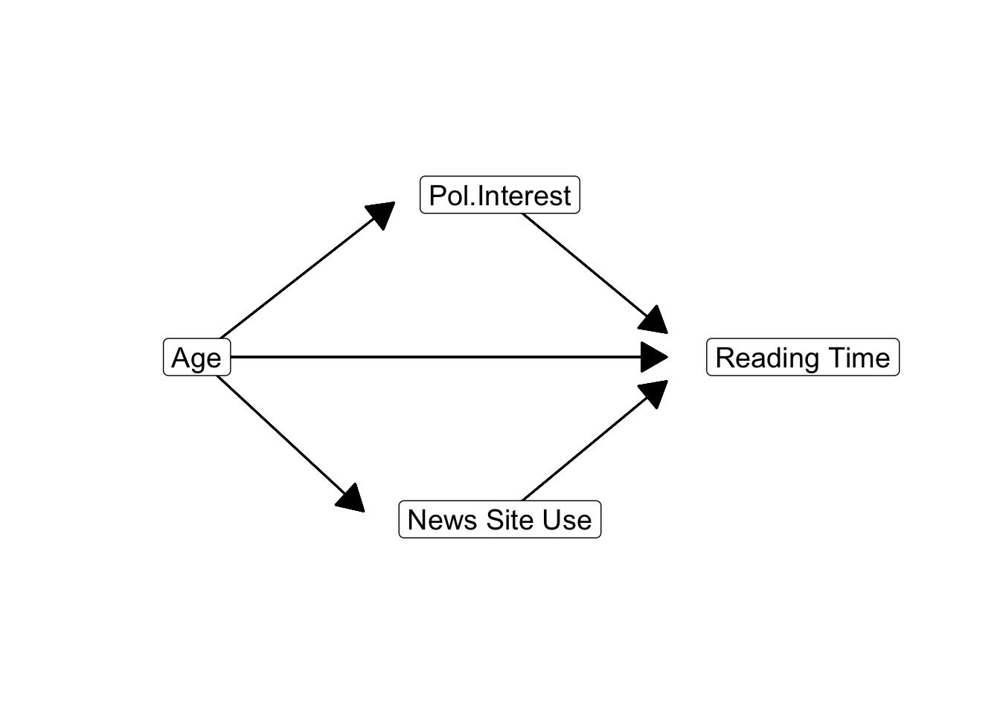
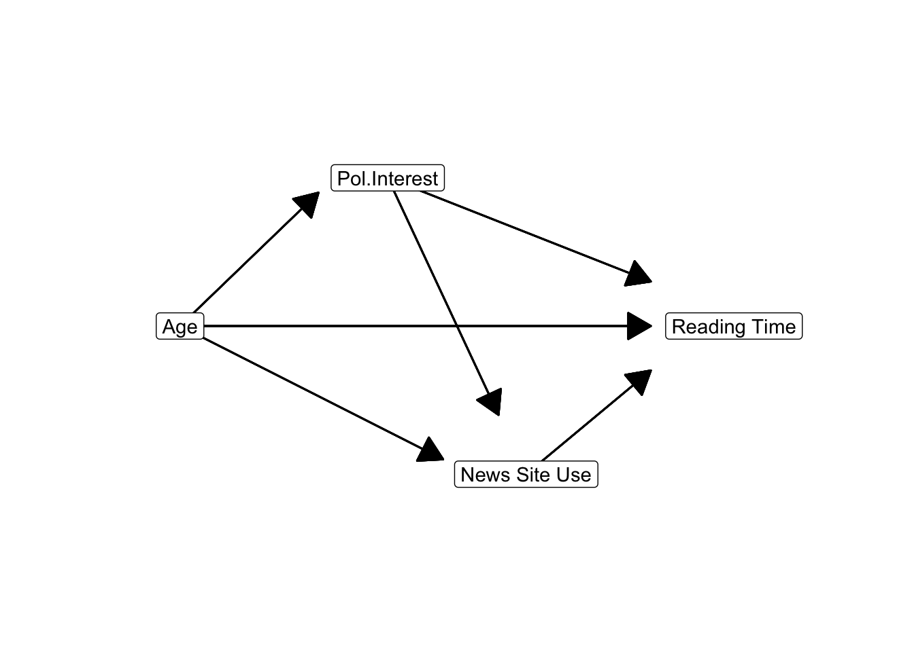
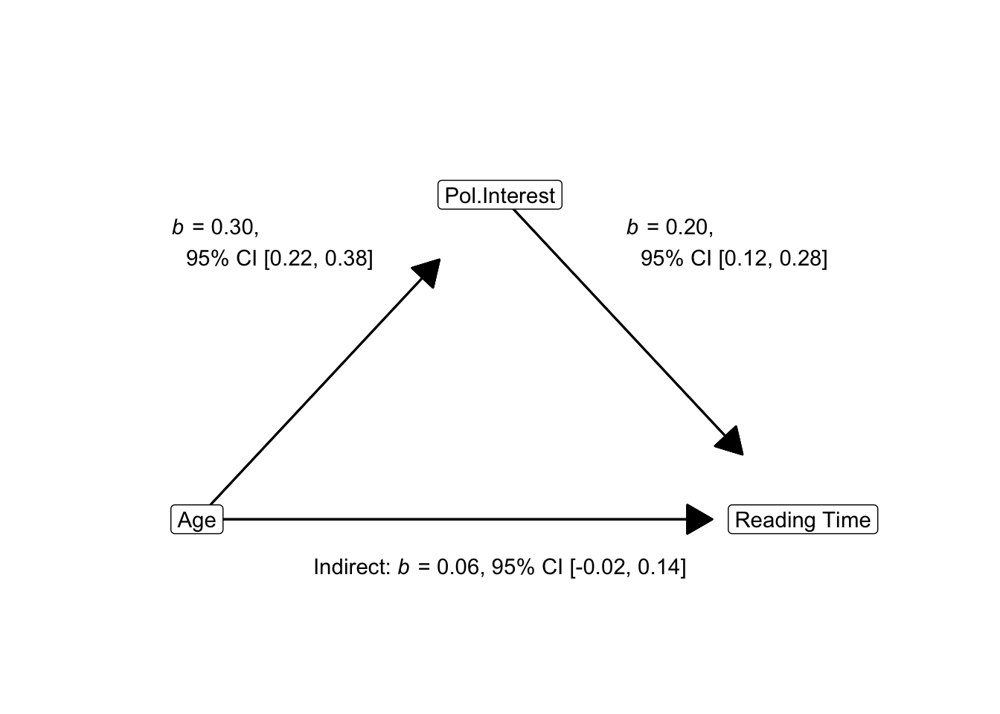
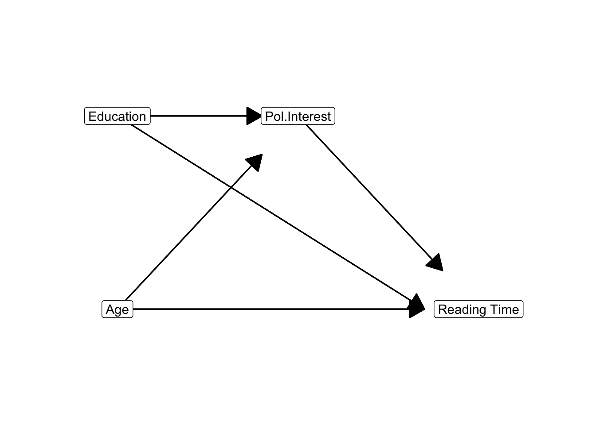
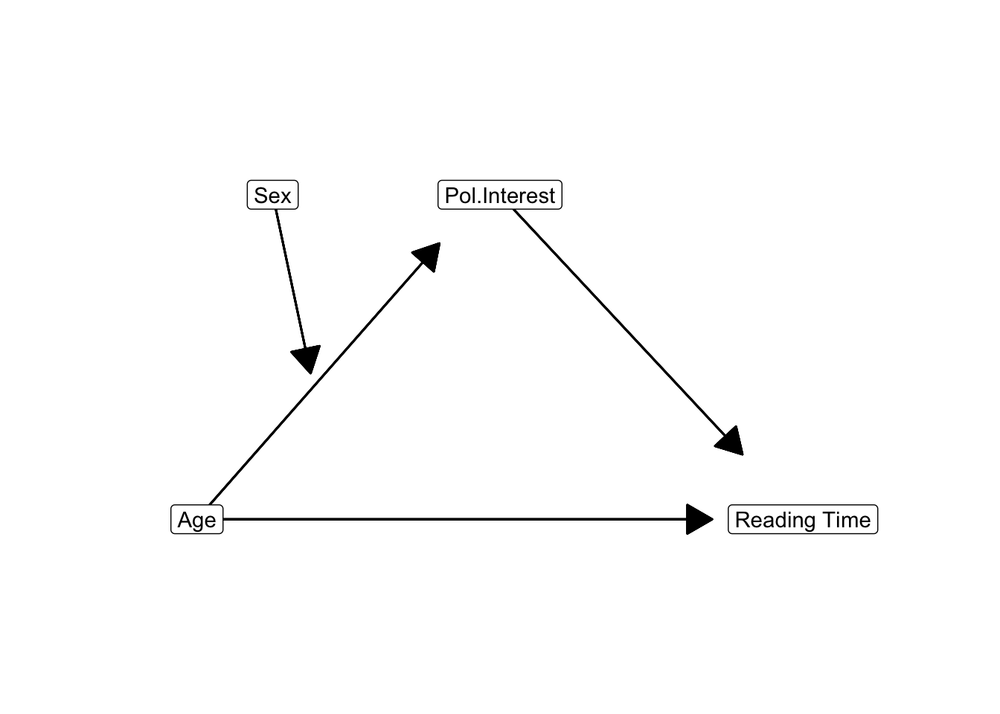

9 Mediation with Regression Analysis
Key concepts: causality, causal and time order, common cause, direct, indirect, and total effects, causal model, path diagram and path model, parallel and serial mediation, partial mediation, covariate, controlling mediator values.
Watch this micro lecture on mediation for an overview of the chapter (Video 9.1).
Summary
Can I add a causal order to the predictors in my regression models?
If we add a causal order among the predictors of our regression model, we obtain a causal model or path model. The causal model includes an indirect effect: The first predictor affects the scores on the second predictor, which affects the scores on the dependent variable that we usually call the outcome variable. For example, age affects news site use, which affects newspaper reading time. In this path model, the second predictor (news site use) mediates the effect of the first predictor on the outcome variable. The second predictor is called a mediator.
We can estimate a path model as a series of regression models. The size of an indirect effect equals the product of the direct effects that constitute the indirect effect. With additional software, we can estimate the confidence interval of an indirect effect.
Mediation models help us to think about the different ways in which a variable may cause another variable. But we must realize that the causal order underlying the model is an assumption that we make. A regression model shows the predictive effects, which do not have to be causal. We cannot prove that the predictive effects are causal. We can only think of arguments that make a causal interpretation of a predictive effect plausible.
Essential Analytics
We can analyze a mediation model with a series of regression analyses in SPSS (the Linear option in the Regression submenu). We need one regression model for each variable that is predicted by one or more other variables in the model. The predicted variable is the dependent variable and as independent variables we use all variables that we think are causally prior to the dependent variable.
As an alternative, we may use the PROCESS macro for SPSS. The macro requires that we distinguish between parallel mediation (each indirect effect has just one mediator) and serial mediation (at least one indirect effect includes two or more mediators). PROCESS gives us the size and bootstrapped confidence intervals for all indirect effects of the selected predictor via mediators on the final outcome variable.
Figure 9.1 shows the results of a model in which political interest and news site use mediate the effect of age on newspaper reading time. Apart from a direct effect (b = 4.55, 95%CI[3.62, 5.47], red box in Figure 9.1), three indirect effects have been estimated. Clearly the strongest indirect effect of age is the effect mediated by news site use (Figure 9.1, green boxes). An additional unit of age increases predicted newspaper reading time by 1.44. The 95% confidence interval (95%CI[0.64, 2.24], bootstrapped) does not include zero, so this indirect effect is statistically significant at the .05 significance level.
9.1 Mediation as Causal Process
9.1.1 Criteria for a causal relation
Researchers are usually interested in causal effects, so let us theorize a causal order between age and reading newspapers. From previous research and personal experience, we strongly suspect that older people spend more time on reading newspapers than young people. In statistical language, we expect a positive correlation between age and newspaper reading time. Can age be a cause of current newspaper reading?
Correlation is the first criterion. A causal relation implies correlation or another type of statistical association. If newspaper reading is not correlated with age, it is hard to imagine that age affects newspaper reading. But correlation does not imply causation, as the saying goes. Correlated variables do not have to be causally related. We need additional arguments to add plausibility to a causal relation.
The second criterion is the time order between cause and consequence. A cause must appear before the consequence. In our example, a person’s age must be fixed before she displays the behaviour that we want to explain, namely reading newspapers. The time order is very plausible here because age stands for the moment a person was born, which must be prior in time to reading newspapers. If there is a causal relation between age and reading newspapers, age must be the cause and newspaper reading the consequence.
A third criterion for causality is that the correlation is not spurious. In Section 8.3.2, we have encountered a spurious effect as an effect that incorrectly includes the effect of a confounder (reinforcer).
In the context of causality, spuriousness is linked to a confounder that is a common cause to both the assumed cause (predictor) and consequence (dependent variable). Age, for instance, can be a common cause both to having (grand)children and reading newspapers. Older people tend to have more (grand)children and they read more newspapers. If we do not control for age in a regression model predicting newspaper reading time from the number of (grand)children a person has, we may find a positive effect.
This effect is probably not causal: We do not spend more time reading newspapers because we have more (grand)children. Unless we use newspaper reading to ignore our children and grandchildren when they are around. Most if not all of the effect of (grand)children on newspaper reading is spurious because it results from a common cause, namely age or the habits and opportunities represented by age.
To interpret an effect that we find as causal, then, we must ensure that there are no confounding variables that are common causes to both our predictors and dependent variable. Including them as controls in the regression model is a way to solve the problem (Chapter 8). With non-experimental data, for example data on newspaper reading habits gathered in a survey, we cannot be sure that we have included all common causes in our model. In this situation, we should always keep in mind that the effects that we find may be caused by variables not included in our regression model. In an experiment, however, we can use experimental randomization to minimize the chance of having any confounders at all (Section 8.2.2).
9.1.2 Mediation as indirect effect
A common cause does not have to remove the entire effect between a predictor and dependent variable. Even if part of newspaper reading is caused by age, another part can be caused by a variable related to age, for example, interest in politics. During their lifetime, people may gain more experience with politics and, for that reason, become more interested in reading about politics. This may cause them to invest more time in reading newspapers for collecting information.
Not all people become more interested in politics as they grow older and their interest in politics does not have to increase regularly during all of their lifetime. The relation between age and interest in politics, therefore, will not be perfect. This allows us to technically distinguish between the effect of age and the effect of interest in politics.
If we include both age and interest in politics as predictors in a regression model for newspaper reading time, the partial effect (Section 8.1.1) of interest in politics is corrected for the spurious correlation between interest in politics and newspaper reading caused by age as their common cause. The partial effect of political interest can be interpreted as causal if current interest in politics was attained before the newspaper readings that we measure (very plausible) and age is the only common cause of interest in politics and newspaper reading (highly questionable).

Now let us draw the causal diagram for this simple example (Figure 9.3). A causal diagram contains the names of the variables with arrows pointing from causes to consequences. The causal order of variables is represented from left to right. In Figure 9.3, the very first cause (age) is at the left, the final consequence (newspaper reading time) is at the right, and interest in politics is placed in the middle. In this layout, the arrows always point to the right.
In the causal order that we theorize, age is causally prior (antecedent) to interest in politics, which is causally prior to current newspaper reading time. We have an indirect effect of age on newspaper reading by way of interest in politics. When adults grow older, they tend to be more interested in politics and because of this, they tend to spend more time on reading newspapers. We say that interest in politics mediates the effect of age on newspaper reading time. Interest in politics is a mediator, an intermediary variable, or an intervening variable in this causal diagram.
A causal diagram like Figure 9.3 is also called a path diagram. Each indirect effect is a sequence of direct effects. Each direct effect is a “step” from one variable to another variable, represented by an arrow. An indirect effect, then, can be regarded as a path that we can follow to “travel” from one variable to another variable.

An indirect effect may contain more than one step or mediator. If we include news site use in the model (Figure 9.4), we would have an indirect effect of age via interest in politics via news site use on newspaper reading time.
- Mediation: A causal relationship between a predictor, one or more mediators, and an outcome variable.
- Indirect effect: An effect in which three (or more) variables affect each other in a causal order: the predictor affects the mediator, the mediator affects another mediator or the outcome variable.
9.1.3 Causal process
In our example (Figure 9.4), age has a direct effect on newspaper reading time. What does the direct effect mean? If we start thinking about why older people spend more time on reading newspapers, we soon realize that this is probably not some biological process. It is hard to believe that an ageing human body requires more newspaper reading time. The effect is more likely to be social.
In the middle of the 20th century, newspapers were among the most important sources of information. A person who was born and grew up in that period is accustomed to using newspapers as main information source. For later generations, however, news sites on the internet have become important sources of information. Newspapers being less important to them, they are less oriented and accustomed to reading newspapers.
This line of reasoning shows us two things. First, we discover that our common cause may actually represent different things. Age, for instance, refers to life experience in its effect on interest in politics. In contrast, it relates to the period of coming of age in its direct effect on newspaper reading time.
Our second discovery is that we usually look for mediators if we want to understand a direct effect. Date of birth affects exposure to people using newspapers as information sources, which affects the habit of reading newspapers, which finally affects the time spent on reading newspapers later on. Exposure and habit are mediators here. A direct effect of age on newspaper reading represents a causal process that may contain many intermediary steps. Adding mediators to our model is a way of getting more insight in the causal process.
9.2 Path Model with Regression Analysis
Mediation or, more generally, path models can be estimated with a series of regression models. Every variable in the path diagram with at least one predictor (or incoming arrow) is a dependent variable, so for each of them, we estimate a regression model. The regression model contains all variables as predictors that may cause changes in the dependent variable. In other words, all variables that are causally prior to the outcome are used as predictors. In a well-designed causal diagram, all variables to the left of the outcome are causally prior to it.
In the path diagram displayed in Figure 9.5, we would regress newspaper reading time, the final dependent variable, on age and political interest. As a next step, we would predict political interest as outcome from age.
9.2.1 Requirements
We can estimate mediation and path models with regression analysis if we meet the following requirements:
Each variable used as a dependent variable is numeric. This is a general requirement of a linear regression model. In a path diagram, it means that all mediators and dependent variables must be numeric.
For detail lovers: Variables with only incoming arrows may be dichotomous but that requires logistic regression, which we do not discuss.
Each variable used only as a predictor must be a numeric or dichotomous (dummy) variable. Again, this is a general requirement of regression models.
There are no causal feedback loops. Causality must work in one direction. It must be impossible to travel from a variable back to it while following the direction of the arrows. Note that it can be difficult to assign a causal order. For example, does political interest cause (low) political cynicism or the other way around? Or are they not causally related at all?
All regression models meet the assumptions for regression analysis. Check if the residuals are normally distributed, centered around zero for all levels of the predicted outcome scores, and that scores are predicted equally well at all outcome levels (see Section 6.1.4).
9.2.2 Size of indirect effects
The regression results tell us the sizes and statistical significance of all direct effects on the dependent variable. Both unstandardized and standardized regression coefficients can be used to interpret effects in the usual way. But how do we obtain the size, confidence interval, and statistical significance of indirect effects?
The size of an indirect effect is calculated in exactly the same way as the size of indirect correlations (Section 8.2): Just multiply the size of direct effects. This can be done with either the standardized regression coefficients or the unstandardized regression coefficients.
It may sound weird that we can multiply the unstandardized regression coefficients but it really works. In Figure 9.6, for instance, the unstandardized partial effect of age (measured in tens of years) on interest in politics is 0.1. This means that an additional 10 years of life predict an average increase in interest in politics of 0.1.
In its turn, interest in politics has an unstandardized effect of 0.32 on reading time (in minutes). An additional unit of interest in politics predicts an average increase in reading time of 0.32 minutes.
Ten additional years of life only predict an increase of 0.1 in political interest, not a full unit increase. The predicted increase of 0.1 in political interest predicts 0.1 * 0.32 = 0.03 minutes of additional newspaper reading time. As a result, an additional ten years of life predict 0.1 * 0.32 = 0.03 minutes of additional newspaper reading time as an indirect effect via political interest.
Note that the indirect effect is interpreted in terms of the measurement units of the initial predictor (age in tens of years) and the final outcome (reading time in minutes): A difference in (tens of) years predicts a difference in reading time in minutes. As a consequence, we can directly compare unstandardized indirect effect sizes of different paths between the same predictor and outcome, as we will see in Section 9.2.5.
9.2.3 Direction of indirect effects
Multiplication of direct effects assigns the right direction (positive or negative) to indirect effects. In the example above, age has a positive effect on interest in politics, which has a positive effect on newspaper reading time. If age goes up, interest in politics goes up and if interest in politics goes up, reading time increases. Thus, higher age is indirectly associated with more reading time through interest in politics: Plus times plus yields a plus.
9.2.4 Parallel and serial mediation
If each indirect effect in a path model contains at most one mediator, we have single mediation or parallel mediation. Figure 9.7 illustrates single and parallel mediation.


If at least one of the indirect effects in a path model contains two or more mediators, we are dealing with serial mediation. Figure 9.8 illustrates serial mediation. It contains an indirect effect from age on reading time with two mediators: Age > Political Interest > News Site Use > Reading Time. The distinction between parallel and serial mediation is relevant to the software (PROCESS) that we will use to estimate indirect and total effects (Section 9.5).

9.2.5 Partial and full mediation
The unstandardized direct effect and indirect effects between a predictor and outcome can be compared directly because they are all expressed in the same measurement units, namely the predicted change in the dependent variable (reading time in minutes) for a difference of one unit in the predictor (ten additional years of life) (Section 9.2.2). Because of this, we can sum the unstandardized direct and indirect effects to obtain the total unstandardized effect.
With this in mind, we see that the relation between age and newspaper reading time is dominated by the positive direct effect (b = 5.99) and the positive indirect effect via news site use (b = 0.03). The remaining indirect effects are relatively small as indirect effects usually are.
Summing all effects, we obtain a total effect of age on newspaper reading time around 6 (b = 6.03). A person who is ten years older but in other respects the same as another person, is predicted to spend on average 6 additional minutes on reading newspapers per day.
If the direct effect of a predictor on the outcome is zero in a model with mediators, the predictor’s effect is fully mediated. This clearly is not the case in our example: There still is a substantial direct effect of age on newspaper reading time. This is what we usually encounter; it is called partial mediation.
Sometimes, researchers decide that an effect is fully mediated if the direct effect is no longer statistically significant once a mediator is added to the model. This strategy is contestable because a statistically non-significant direct effect does not mean that the effect is absent (zero) in the population. It can be absent but it is much more likely to be present but just too small to be picked up by our significance test (see Section 4.2.7).
The distinction between full and partial mediation is a little bit problematic. From a substantive point of view, we may argue that direct effects are probably always mediated. As we have seen in Section 9.1.2, a direct effect usually summarizes a causal process that consists of intermediary steps, which is mediation. We may wonder whether it makes theoretical sense to talk about unmediated effects. Do we really believe that age can directly affect newspaper reading time?
If the variables that we entered in the model as mediators do not create any indirect effects, the direct effect is equal to the total effect. We may conclude that the direct effect is not mediated by the mediators that are included in the model. For example, if education, political interest, and news site use do not create indirect effects from age on newspaper reading time (Figure 9.6), we only have the direct effect of age on reading time in our model. However, this effect is very likely to be mediated by other variables that we did not include in the model. We should not conclude that the effect is unmediated because we have not found mediation yet.
9.2.6 Significance of indirect effects
SPSS does not calculate the size of indirect effects for us or their confidence intervals and p values. It is easy to calculate the sizes of indirect effects, as we have seen in a preceding section: just take the product of direct effects.
In contrast, it is not possible to calculate the confidence interval or p value of an indirect effect in a reliable way from the confidence intervals or p values of the direct effects (see Hayes 2013: Section 4.4 for a detailed and critical discussion of approaches that try to calculate the p value of an indirect effect from p values of direct effects).
We use bootstrapping to create the sampling distribution of the size of an indirect effect. We have learned the principles and limitations of bootstrapping in Section 2.5, so we do not have to go into details here. Suffice it to repeat that our original sample must not be too small and it must be quite representative of the population if we apply bootstrapping.
| Effect | Boot SE | BootLLCI | BootULCI | |
|---|---|---|---|---|
| Total indirect effect | 1.47 | .42 | .62 | 2.25 |
| Age - Pol. Interest - Reading Time | .05 | .03 | .01 | .14 |
| Age - Pol. Interest - News Site Use - Reading Time | -.02 | .01 | -.05 | .00 |
| Age - News Site Use - Reading Time | 1.44 | .42 | .60 | 2.23 |
Bootstrap results for unstandardized indirect effects in a model with two mediators. Effect size, standard error, lower and upper levels of the 95% confidence interval.
The confidence interval of an indirect effect can be calculated from its bootstrapped sampling distribution. Table 9.1 shows bootstrap results for the indirect effects in a model with age as predictor, newspaper reading time as dependent variable, and interest in politics and news site use as mediators.
In total, there is a substantial indirect effect of age on newspaper reading time in this model. We are confident that this effect is positive [b = 1.47, 95% CI [0.62, 2.25] (bootstrapped)]. It is easy to see that the indirect effect of age via news site use on reading time is by far the most important indirect effect [b = 1.44, 95% CI [0.60, 2.23] (bootstrapped)]. On its own, it is responsible for almost the entire total indirect effect.
It may happen that an indirect effect is not statistically significant (the confidence interval includes zero) whereas all direct effects that constitute the indirect effect are statistically significant. In Figure 9.9, for example, both the effect of age on political interest (b = 0.30, 95% CI [0.22, 0.38]) and the effect of political interest on reading time (b = 0.20, 95% CI [0.12, 0.28]) are statistically significant at the .05 level. The indirect effect of age via political interest on reading time, however, is not statistically significant at this level [b = 0.30 * 0.20 = 0.06, 95% CI [-0.02, 0.14], (bootstrapped)].

This sounds like a paradox but it should not upset you. The unstandardized indirect effect tends to be weaker than the direct effects, that is, closer to zero. With a weaker effect, it is more difficult to reject the null hypothesis that the effect is zero in the population. We need a larger sample to reject null hypotheses for smaller effects (see Section 4.2.3 on power). In this case, report that all direct effects that create the indirect effect are statistically significant, so non-significance is likely to arise from low test power rather than from absence of an indirect effect in the population.
9.3 Controlling for Covariates
We usually have theoretical reasons to expect that a variable mediates an effect, for example, that political interest mediates the effect of age on newspaper reading time. At the same time, we know that our dependent variable and perhaps our mediator may depend on other variables. Newspaper reading time, for instance, may also depend on education. In this situation, we would use the other variables as covariates (or control variables) for which we want to control statistically.

Figure 9.10 presents a model in which education is used as a covariate in a model with political interest mediating the effect of age on newspaper reading time. Education is probably causally prior to both political interest and newspaper reading time, so it is allowed to have an effect on both variables. In this way, we control for education and remove spurious correlation between political interest and newspaper reading time due to education as a common cause.
If education predicts political interest and political interest predicts newspaper reading time as in Figure 9.10, political interest mediates the effect of education on newspaper reading time. We are, however, not interested in mediation in the case of a covariate, so we do not estimate or report the indirect effects of education on newspaper reading time. In the context of a mediation model, a covariate is a predictor for which we do not investigate if its effect is mediated.
Note that covariates should only be allowed to have an effect on variables that can be caused by the covariate. We should not include effects of a covariate on a variable that is causally prior to it. If a covariate is a consequence rather than a cause of a mediator, it had better be used as another mediator in the model. If, for instance, political cynicism may affect newspaper reading time but it is a consequence of political interest, it should be included as a second (serial) mediator instead of as a covariate.
9.4 Reporting Mediation Results
We analyse a path model as a series of regression models, so the general rules for reporting mediation are the same as for reporting regression analyses (see Section 7.2). If you summarize results in a table, make sure that the table includes:
- The unstandardized regression coefficients for all direct and indirect effects tested in the regression models.
- The confidence intervals and significance levels of the unstandardized effects.
- The F test and measure of model fit (\(R^2\)) for each regression model.
| B | 95% CI | ||
|---|---|---|---|
| Outcome: News Site Use | |||
| constant | 6.62 | *** | [5.92; 7.31] |
| age | -0.93 | *** | [-0.97; -0.88] |
| education | 0.06 | * | [0.01; 0.11] |
| pol.interest | 0.12 | *** | [0.06; 0.17] |
| R2 | 0.86 | ||
| F (3, 308) | 617.40 | *** | |
| Outcome: Newspaper Reading Time | |||
| constant | 13.59 | ** | [5.26; 21.93] |
| age | 4.54 | *** | [3.62; 5.47] |
| education | 0.06 | [-0.34; 0.46] | |
| pol.interest | 0.52 | * | [0.07; 0.96] |
| newssite | -1.55 | ** | [-2.47; -0.64] |
| R2 | 0.79 | ||
| F (4, 307) | 290.85 | *** | |
| Indirect Effect | |||
| Age > News Site Use > Reading Time | 1.44 | [0.61; 2.17] | |
| Note. * p < .05. ** p < .01. *** p < .001. |
Unstandardized effects in a model regressing newspaper reading time on age with one mediator (News Site Use) and two covariates (Education, Political Interest). Theoretical approximation for direct effects, bootstrap results for indirect effects, using 5,000 bootstraps.
A path model may yield a lot of direct effects, so it is good practice to present results as a path diagram with the values of the standardized or unstandardized regression coefficients as labels to the arrows. A path model conveniently summarizes the results for the reader (Figure 9.11). Remember that we don’t use standardized regression coefficients if the predictor or a covariate is dichotomous variable or a set of dummy variables (see Section 6.1.2).
If effect mediation is central to your report, focus your presentation and interpretation on the indirect effects and compare them to the direct effects. Report the size and confidence interval of each indirect effect. If possible, add both the direct and indirect effect to a diagram such as Figure 9.11.
Interpret an unstandardized indirect effect just like any unstandardized regression effect, namely, as the predicted difference in the outcome for a one unit difference in the predictor. It is usually interesting to compare the sizes of the direct and indirect effects. Is the effect predominantly mediated in the model or is only a minor part of the effect mediated in the model?
Inform the reader that you bootstrapped the indirect effect and report the number of bootstrap samples and the method used for the confidence intervals (see Section 9.5). For a more elaborate discussion of reporting mediation, see Hayes (2013: 198-202).
9.5 Mediation with SPSS and PROCESS
9.5.1 Instructions
SPSS cannot apply statistical inference to indirect effects, so we use the PROCESS macro developed for this purpose (Hayes 2013). If correctly installed (see below), the macro can be used from within the SPSS Regression menu. Please note that you had better not paste the PROCESS commands to the SPSS syntax because it produces a lot of code that is difficult to understand. Instead, run the PROCESS command directly from the menu and manually add a comment to your SPSS syntax file reminding yourself of the model that you estimated with PROCESS.
Download the PROCESS macro and install the SPSS custom dialog file. Check the FAQ at the PROCESS website if installation is not successful. If PROCESS is successfully installed, it can be found in the Analyze > Regression menu.
9.6 Criticisms of Mediation
If we think of causality, we usually think of a process in which one thing leads to another thing, which leads to something else, and so on. This is apparent if we want to explain why we think that one phenomenon causes another (see Section 9.1.2). Mediation, however, is difficult to establish with regression analysis and, as some argue, perhaps impossible to establish.
9.6.1 Causal order assumed
It is paramount to note that the regression approach to mediation and path models does not tell us anything about the causal order of the variables. The causal order is purely an assumption that we make. The plausibility of the assumptions depends on how well we can justify the time order of the variables and the absence of common causes for cause-consequence pairs (see Section 9.1.1).
9.6.2 Time order
To establish the time order of variables, we must think about the time at which the behaviours or opinions that we measure took place. This is what matters, not the time at which we measure them. We can collect information on behaviour a long time after the fact, for example by asking respondents when they started using news sites or checking internet use logs.
If cause and consequence appear very closely in time, it may be difficult to argue that one variable precedes the other. This may also apply to the time at which measurement takes place. If we measure cause and consequence nearly at the same time, it can be difficult to establish the time order of the two.
9.6.3 Causality or underlying construct?
For causes and consequences that appear nearly simultaneously, we should take into account that the two variables may measure the same underlying construct. Think of the way we construct a scale from items: We assume that the items measure the same underlying attitude, for instance, political cynicism.
The indicators of a scale are correlated because they have a common cause, namely, the underlying attitude. But it does not make sense to interpret the correlation as a sign of mediation. One item does not trigger another item, and so on. A mediator must be theoretically and conceptually different from both the predictor and outcome. We have to provide arguments that they are really different.
9.6.4 Every effect in a path model can be confounded
In Chapter 8, you learned that the estimated regression coefficients can be too small, too large, or have the wrong sign (direction) if there are confounders: variables not included in the regression model that are correlated with the predictor and outcome variable. If we analyze a path model with a series of regression models, there can be confounders for each regression model. Every estimated direct effect can be wrong. As a consequence, every indirect effect, which is the product of direct effects, can be wrong.
The surest way to get rid of a confounder is adding it to the regression model. In a path model, we can add a variable that we expect to be a confounder as a covariate (Section 9.3) or as an additional mediator. If a confounder comes after the outcome variable in the causal order of the path model, it cannot be a common cause to both a predictor and the outcome variable. In this situation, the confounder can be ignored. This underlines the importance of choosing a correct causal order when we construct a path model. Unfortunately, we can never be sure about this.
In practice, we do not know all confounders and we cannot include all of them in our regression models. We can minimize the risk of having confounders if we use randomization in an experiment. Section 8.2.2 explained how randomization of the experimental treatment variable helps to eliminate confounders for the effect of the experimental treatment (predictor variable) on the dependent variable. We expect that this effect is not confounded.
In a path model, a mediator also serves as a predictor, so we also have to randomize the mediator variable to get correct estimates for the causal effect of the mediator on the outcome variable. With randomized predictor and mediator variables, the direct effects are probably not confounded, so the indirect effects calculated from the direct effects are also unlikely to be confounded.
It is difficult to manipulate a mediator in an experiment (Bullock and Ha 2011). If we hypothesize, for example, that political interest mediates the effect of age on newspaper reading time, how can we assign a random level of political interest to a participant in an experiment? By the way, it will also be impossible to randomize participant age in this example.
9.6.5 Recommendations
All in all, mediation is an intuitively simple and appealing concept. Unfortunately, it is very difficult to substantiate the claim that indirect effects in path models represent mediation. Mediation assumes causal effects and causality is difficult to establish.
If you plan to investigate mediation:
Justify that the mediator is theoretically and conceptually different from the predictor and outcome.
Motivate the time order of variables in the model.
Include variables that are likely to confound the effects of the predictor or mediator(s) in your research project and in the regression models that you are going to estimate.
9.7 Combining Mediation and Moderation
Mediation and moderation (Chapters Chapter 6 and Chapter 7) can occur in the same model. For example, the effect of age on newspaper reading time mediated by interest in politics can be different for females and males. In other words, the indirect effect is different for females and males.
If the indirect effect is different for females and males, at least one of the two direct effects (predictor on mediator or mediator on dependent variable) must be different for females and males. In Figure 9.12, the direct effect of age on interest in politics is moderated and as a consequence, indirect effects including this effect are moderated. This is called moderated mediation. In this example, sex is the moderator and interest in politics is the mediator.

Several models with more than one mediator or with moderated mediation can be estimated with PROCESS. For an overview of the models, see Appendix A in Hayes (2013). The models, however, are quite complex, so we leave them for enthusiasts.
9.8 Take-Home Points
A causal or path model without causal feedback loops can be estimated as a series of regression models: one regression model for each variable that has at least one predictor in the path model.
Unstandardized regression coefficients, standardized regression coefficients, and correlations can be multiplied to obtain indirect effects and indirect correlations.
An indirect effect is a mediated effect. Variables that are at the same time predicted and predictors in an indirect effect are called mediators, intermediary variables, or intervening variables.
Statistical inference on an indirect effect—its confidence interval and significance level—requires a sampling distribution of the size of the indirect effect. This distribution can be bootstrapped with the PROCESS macro (Hayes 2013).
Mediation is an intuitively appealing concept but it is difficult to establish. A causal interpretation of a regression coefficient requires a clear time order between predictor, mediator, and dependent variable, a clear theoretical and conceptual difference between these three variables, and the inclusion of all variables that may confound the effects of the predictor and mediator(s) in the regression models.
Read the little but very helpful book on the logic of causal order by James A. Davis (1985) for more information on causality and correlational analysis.